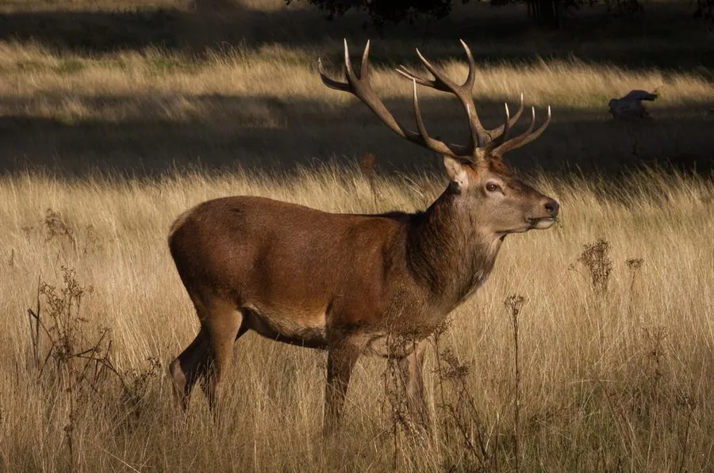

哺乳动物 · 动物界
马鹿 Cervus elaphus

欧亚大陆广泛分布的大型鹿类，雄鹿长有粗壮的分叉角，秋季发情时发出响亮的吼叫，幼鹿身上带斑点。
- 分类
- 门脊索动物门纲哺乳纲目偶蹄目科鹿科属鹿属
- 栖息环境
- 针叶林、混交林、林缘草地与高山草甸
- 地理分布
- 欧洲、亚洲和北非的温带地区，中国东北、华北、西北及西南山地有分布
- 保护级别
- IUCN 无危（LC）；中国国家二级保护动物
物种志
马鹿体长 1.6–2.5 米，肩高 1.1–1.5 米，体重 90–340 kg，雄性明显大于雌性。它的毛色为灰褐至红褐色，冬季颜色较深，臀部有浅色斑块，幼鹿身上有白色斑点；雄鹿长有粗壮的分叉角，通常 4–6 叉，角长可达 1 米以上。
马鹿分布于欧洲、亚洲和北非的温带森林与山地，从英国、斯堪的纳维亚到俄罗斯、中国、日本，栖息于针叶林、混交林、林缘草地和高山草甸。它以草、树叶、嫩枝、树皮和果实为食，多在晨昏活动，秋季发情时雄鹿发出响亮的吼叫，并用角争夺配偶。马鹿结成雌鹿群和雄鹿群，繁殖季才混群；雌兽妊娠期约 8 个月，每胎 1 仔。马鹿在欧亚大陆分布广泛、种群总体稳定，中国将其列为国家二级保护动物。
形态与习性
- 食性草、树叶、嫩枝、树皮与果实
- 体长1.6–2.5 m，肩高 1.1–1.5 m
- 体重90–340 kg，雄性明显大于雌性
- 寿命野外约 15–20 年
- 繁殖秋季发情，妊娠期约 8 个月，每胎 1 仔
- 鹿角雄鹿角通常 4–6 叉，长可达 1 m 以上
- 吼叫发情期雄鹿发出响亮的吼声
趣味知识
- 马鹿的角通常有 4–6 叉，每年脱落重新生长。
- 秋季发情时，雄鹿会发出响亮的吼叫宣示领地。
- 幼鹿身上有白色斑点，是草丛中的天然伪装。
- 马鹿是欧亚大陆分布最广的大型鹿类之一。